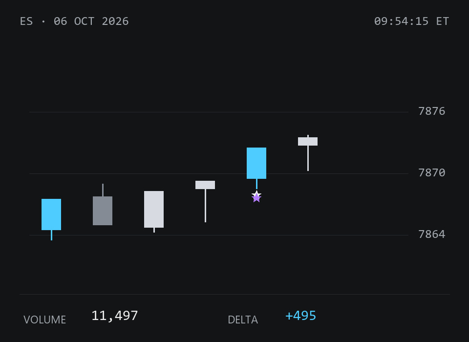
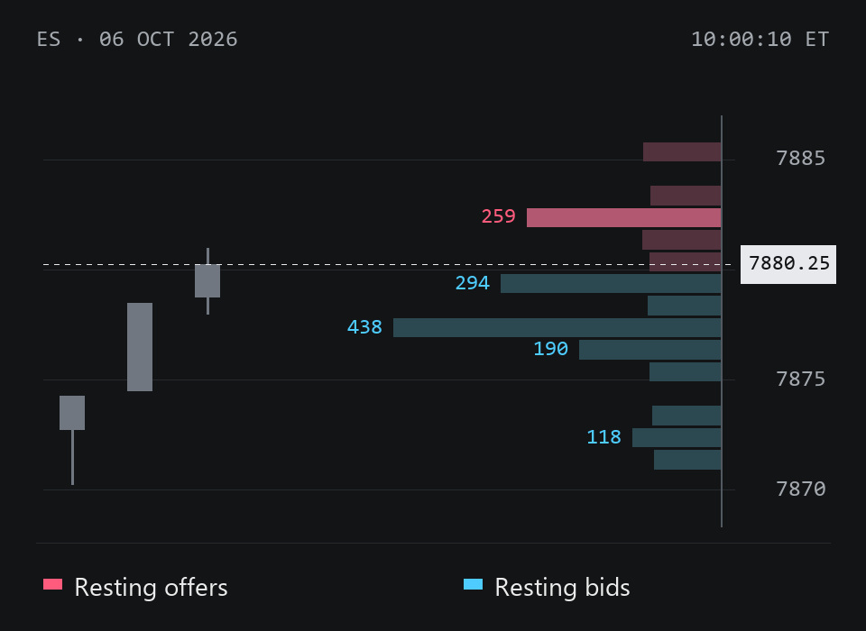
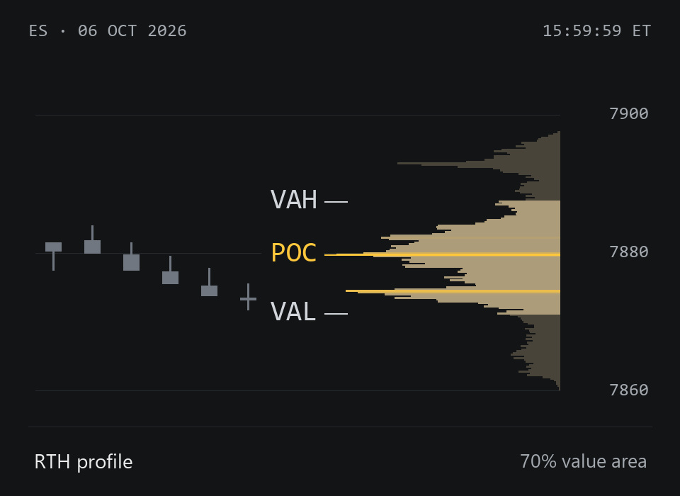

Three private studies
VolumeBars puts volume and delta on the candle. LiveBook shows resting liquidity. AnchoredProfile maps volume and value.
THE SIERRA CHART MEMBERSHIP
Your Sierra Chart environment, built around value → structure → order flow.
The tools, configured study setups, and direct help to put it all together.
Explore membership$100/month · Cancel anytime

Colour connects price with participation. Volume and delta reveal how much traded, and on which side.
Recorded-data demo · 53× speed

The bars show displayed orders waiting to trade. Watch their size change as price moves.
Recorded-data demo · Real time

The profile shows volume at each price. The brightest row is the busiest price; the shaded area holds 70% of volume.
Recorded-data demo · 85× speed
01 / WHAT YOU GET
VolumeBars puts volume and delta on the candle. LiveBook shows resting liquidity. AnchoredProfile maps volume and value.
RTH and DailyExecution+ study collections, with settings already arranged. Anthony helps you apply them to your Sierra charts.
An active private Discord, daily market reviews, and direct setup assistance from Anthony. Study updates are included while you’re a member.
02 / THE FRAMEWORK
Start with developing value, prior value, and the wider volume profile.
Put the current auction in context: balance, range edges, and the space between areas of value.
Read traded volume, delta, and resting liquidity at the location. You make the trading decisions.
03 / GETTING STARTED
You don’t have to assemble it alone.
Subscribe through Memberful, then connect Discord from your member account.
Send Anthony your Sierra Chart username in Discord so he can enable your access.
Apply the RTH and DailyExecution+ collections with direct help. Check your chart settings and bring questions to the daily reviews.
Requires Sierra Chart for Windows and appropriate market data, purchased separately. LiveBook requires market depth data.
04 / MEMBERSHIP
Private studies. Configured setups. Daily market reviews. A community to work with.
$100/month
Monthly membership. Cancel anytime.
Sierra Chart and market data are separate.
Join Anthony’s VaultSecure checkout with Memberful. The checkout still uses our previous name, Anthony’s Lab.
Already a member? Sign inRTH and DailyExecution+ are Sierra Chart study collections: configured studies you apply to a chart, rather than a complete chartbook. Anthony helps with the chart settings and installation.
The demonstrations isolate each tool using real ES trades and recorded market depth from 6 October 2026. They are focused renderings, rather than screen recordings. VolumeBars and AnchoredProfile are sped up; LiveBook plays in real time. Colour and display settings are configurable. The VolumeBars stars mark new session highs in volume and absolute delta.
View Anthony’s full Sierra Chart ↗. This original desk capture also includes personal settings and experimental overlays beyond the featured member tools. Your layout will depend on your configuration and data.